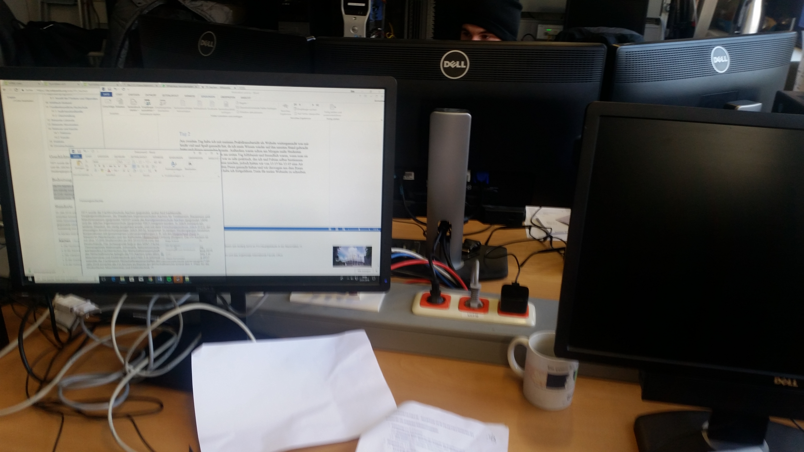
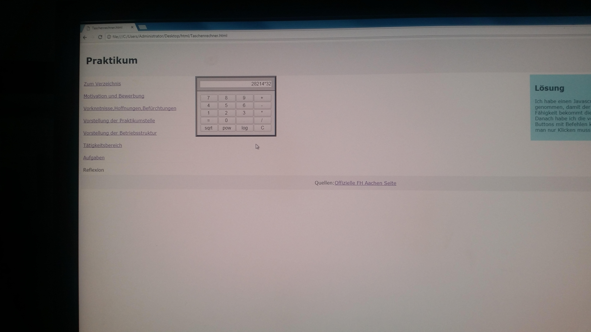
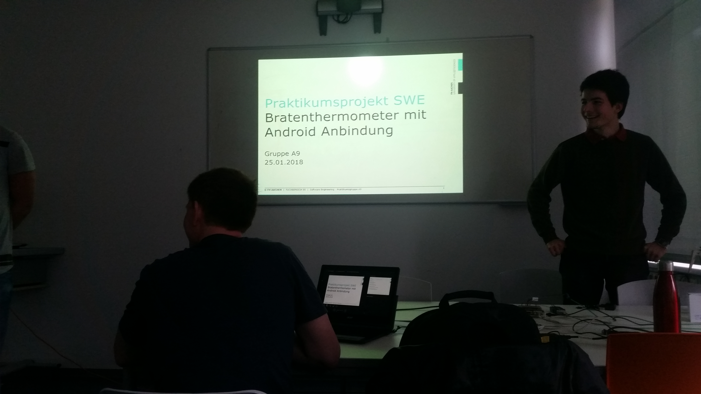
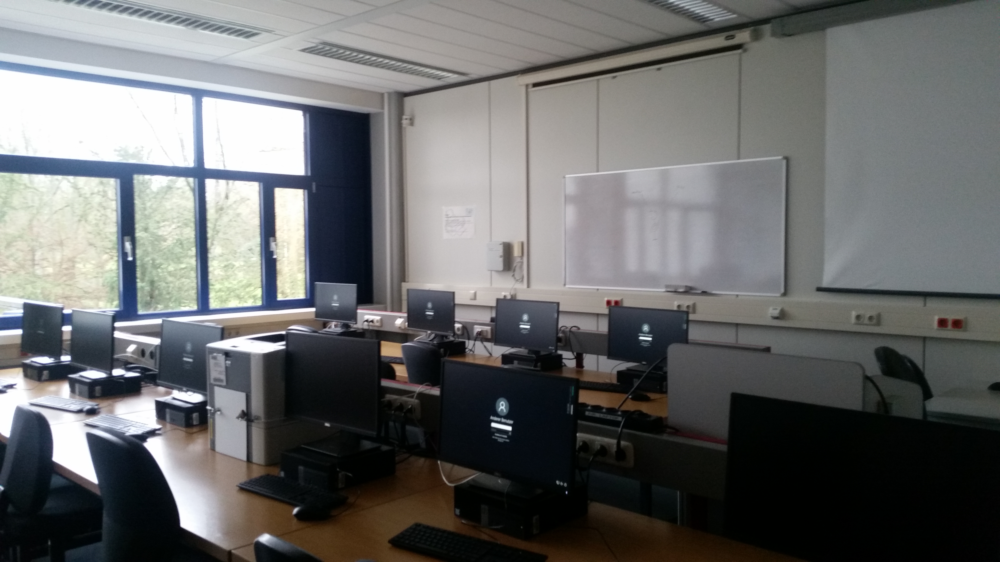
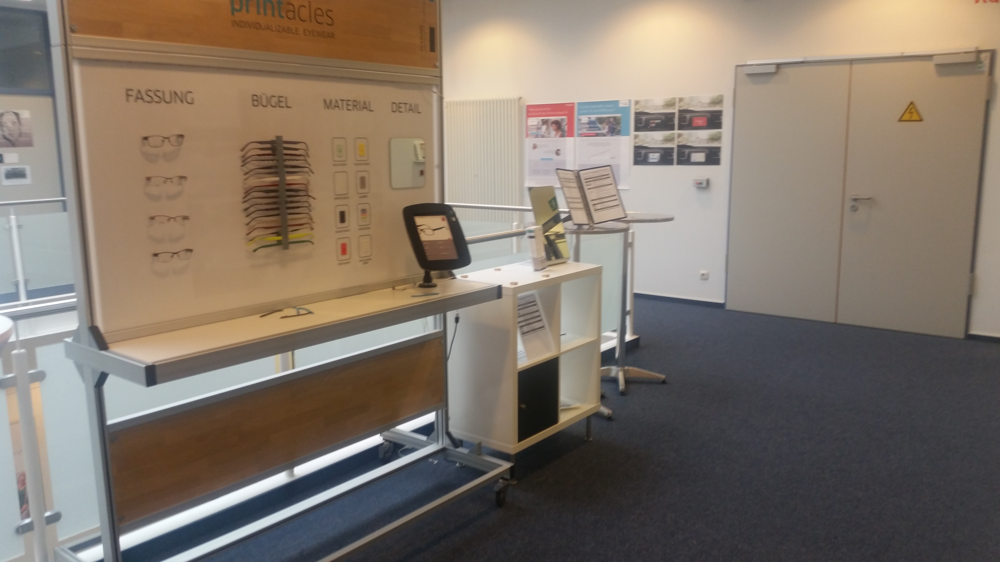
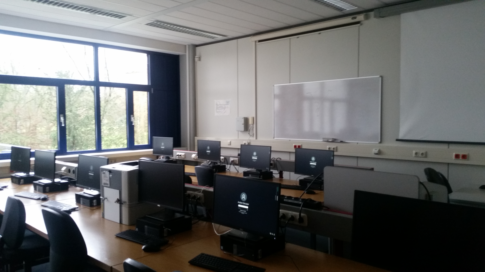
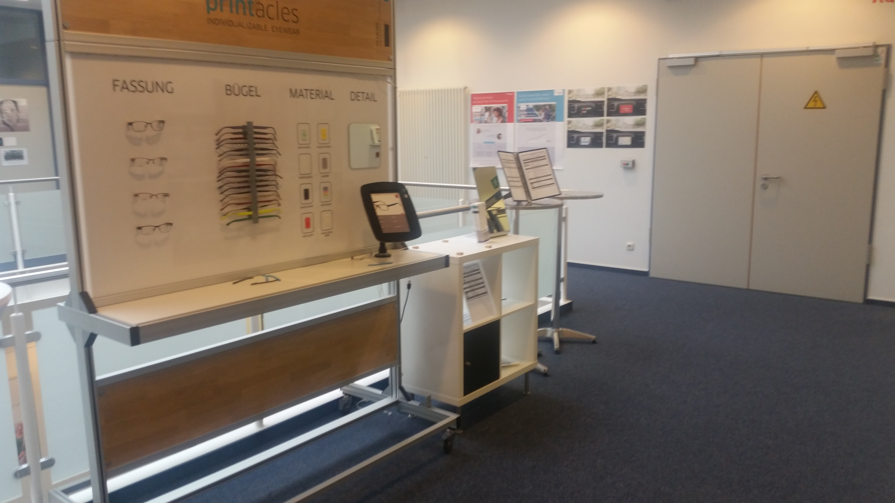

Erster Tag
Am ersten Tag musste ich 1 Stunden warten bevor es los ging, da mein Praktikumsleiter Herr Höfken in eine Besprechung musste und ich warten musste bis dieser fertig war. Nach den anfänglichen Schwierigkeiten haben wir angefangen mit HTML an eine Seite zu verfassen, die später zu meinem Praktikumsbericht wird, da dies mir von meinem Leiter vorgeschlagen wurde um zu zeigen was ich durch das Praktikum gelernt habe. Die meiste Zeit war ich mit zwei Studenten und einen weiteren Praktikant in einer Rechenzentrale, in der wir den ganzen Tag arbeiteten. Nach 2 Stunden Arbeiten habe ich es geschafft, diese Seite zu erstellen mit einem Style,Bild und Inhalt.Außerdem habe ich mit verschiedende Styles ausprobiert und mehrere Divs zu machen.
Zweiter Tag
Am zweiten Tag begann ich mit meiner Website und alles mit Hyperlinks zu verbinden,
was leicht für mich war ,da mein Wissen über HTML wieder aufgefrischt wurde. Im laufe des Tages kammen mehr
Studenten , die mich auf dem neusten Stand brachten und mir wenn ich hilfe brauchte helften, da sie sehr nett, wirklich Hilfsbereit waren und man sich auf sie verlassen konnte, was sehr geholfen hat. Noch dazu durfte ich aussuchen wann ich Pause habe, da man dann am besten entscheiden kann wann man Ruhe brauchte.
, aber um 13:15 bis 13:45 mussten wir eine Zwangspause machen, da die Studenten Pause gemacht haben und ich micht alleine im Raum bleiben dürften.
Nach der Zwangspause habe ich viele Texte für meine Website geschrieben und mich etwas über die Tätigkeiten der Studenten erkundigt.
Aber auch an diesen Tag habe ich was neu gelernt mit javascript umzugehen und einzelne Befehle auszufüren.
Noch dazu durfte ich aussuchen wann ich Pause habe, da man dann am besten entscheiden kann wann man Ruhe brauchte.
, aber um 13:15 bis 13:45 mussten wir eine Zwangspause machen, da die Studenten Pause gemacht haben und ich micht alleine im Raum bleiben dürften.
Nach der Zwangspause habe ich viele Texte für meine Website geschrieben und mich etwas über die Tätigkeiten der Studenten erkundigt.
Aber auch an diesen Tag habe ich was neu gelernt mit javascript umzugehen und einzelne Befehle auszufüren.
Dritter Tag
Am dritten Tag begann ich weiter an meiner Website weiter zu arbeiten und weiter Texte zu schreiben, Im laufe des Tages kammen hatte ich meine Texte fertig und hatte sie mit meiner Hauptseite verbunden. Während dem Rest des Tages habe ich eine neue Aufgabe bekommen und zwar ein Taschenrechner zu programmieren. Dies war etwas schwer ,da ich sowas noch nie gemacht habe ,mit Javascript.Trotzdem hatte es viel spaß gemacht und hat mir mehr möglichkeiten gezeigt wie ich meine Internet Seite gestaltet hab.
Vierter Tag
Der vierte Tag begann mit einen Fehlschlag ,da ich eigentlich mit anderen Studenten Capture The Flag spielen sollte, was nicht funktoniert hat, weil Herr Höfken Probleme mit dem Computer hatte. Er konnte mir nicht die Berechtigungen geben um zu beginnen,was aber nicht so schlim war ,da ich dann später im BWL Gebäude war und ich ein Marketing Vortrag mitbekam. Der Vortrag handelte von einen Bratenthermometer welches durch Bluetooth betriebenen war. Danach arbeitete ich weiter an meiner Internetseite und verbesserte die Texte sowie mein Inhaltsverzeichnis mit weiteren Hyperlinks, damit man noch schneller die Dokumente fand .
Fünfter Tag
Der fünfte Tag begann mit dem lernen von positions, die ich in meiner Internetseite erstellt habe, um die wichstigen Infos immer auf dem Bildschirm zu haben. Am Anfang war es etwas schwer, aber im späteren verlauf habe ich es geschafft. Danach habe ich eine Internetseite für meine Schlussreflexion erstellt und schon mal für diese Woche eine geschrieben. Nach der Pause ging es weiter mit den Bildern die ich neu gesetzt habe damit die Seite besser aussieht. Das größte am Tag war aber die Start Seite, das Deckblatt, welches wieder mein typischen Style hatte. Das schwierige war mit einen neuen Javascript umzugehen, was die Bilder alle paar Sekunden wechseln lässt. Durch mehrere Beispielen und das neu schreiben davon habe ich es hinbekommen dies zu machen.
Sechster Tag
Der sechste Tag begann mit dem verbessern einiger Fehler ,die mir letzte Woche passiert sind. Danach hab ich es hinbekommen das meine Links eine schwarze Farbe bekommen und nicht mehr unterstrichen sind. Danach kam Herr Welter , mein Lehrer ,der sich mein Praktikum anschaute und mir Forschläge machte was ich noch machen könnte. Nach der Pause ging Ich mit zwei Stundenten in dem Serverraum , wo alles mit ein einnander verbunden war. Dann gingen wir im Terminalraum was ähnlich war mit unseren Informatik Raum in der Schule. Später sind wir dann in ein anderes Gebäude rein gegangen wo wir verschiedende Projekte von Schülern sehen konnten. Den Rest des Tages saß ich dann an meiner Seite um sie zu verbessern.

 


